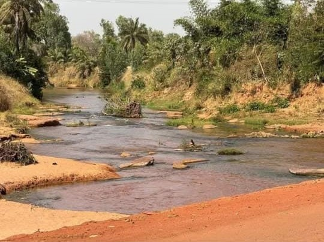

Forêt du Kou (Guinguette)
Description
Située à quelques kilomètres de Bobo-Dioulasso, la Forêt du Kou est un écrin de verdure préservé qui abrite une riche biodiversité. On y trouve des sentiers ombragés, des clairières tranquilles et une source d’eau fraîche qui alimente la Guinguette, un lieu prisé pour les pique-niques et les baignades. C’est un lieu idéal pour les amoureux de la nature, les familles et les visiteurs en quête de calme et de fraîcheur.
Historique
La Forêt du Kou est une réserve naturelle protégée depuis plusieurs décennies. Elle a été aménagée pour permettre aux habitants et touristes de profiter d’un espace écologique tout en préservant la faune et la flore. La Guinguette, ancien lieu de loisirs aménagé sous l’époque coloniale, a été réhabilitée pour accueillir les visiteurs dans un cadre naturel reposant. Aujourd’hui, le site reste un lieu emblématique du tourisme vert à Bobo-Dioulasso.